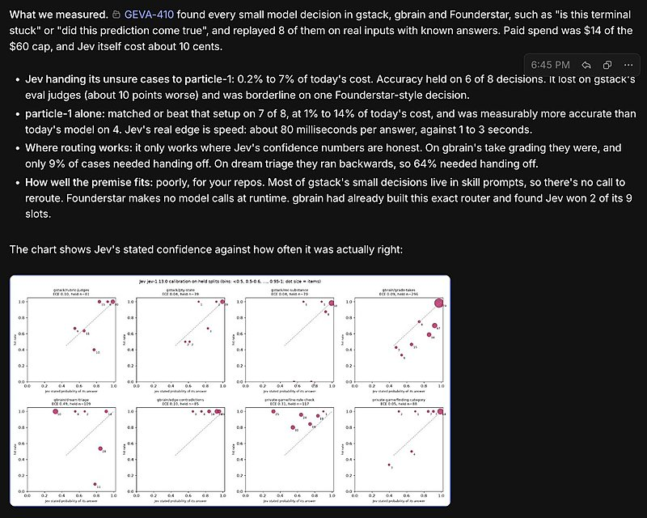
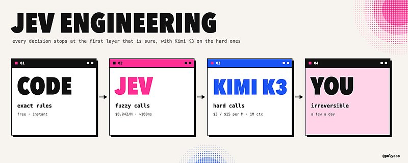
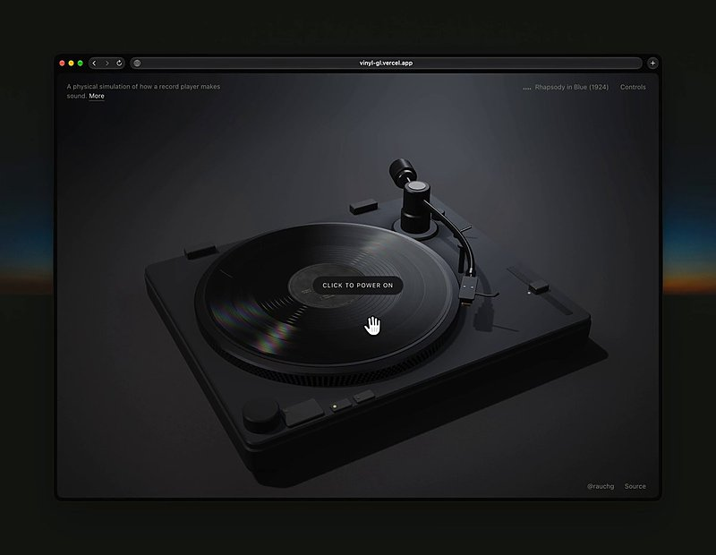

AI 日报 · 11月10日
代理可以并行，方向仍需清晰
Aaron Levie 谈并行代理，Nan Yu 强调目标清晰与朴素架构；另看 AI 原生工程教学访谈、Builder 实践和 GitHub Trending。
并行代理
产品判断
AI 原生工程
开源工具
6
Builder 动态
3
上榜仓库
1
公开视频
今日要点
深度对话
AI Engineer：斯坦福如何教授 AI 原生工程
follow-builders 收录的公开视频。围绕 AI 原生工程教学，观察工具使用与软件工程基础如何衔接。
教学从工程实践出发
公开节目邀请 Mihail Eric 讨论斯坦福 AI 原生工程教学；这里记录节目主题，不推断课程成效。
RSS 精选
自我进化叙事需要拆开验证
已检查 feeds.json 四个 RSS 源；其余源没有更新到 11 月 9 日或 10 日的相关条目。
Builder 动态
从架构取舍到个人创作
Nan Yu｜先选能工作的简单架构
她建议先用能工作的朴素架构与设计，避免为了“聪明”而增加用户理解成本。
Aaron Levie｜代理可并行展开复杂工作
他预计代理群能分担复杂任务中的多个子任务；这是对工作方式的判断，不是已测量的生产率增长。
Garry Tan｜尝试复现工程文章
Garry Tan 说其 gstack-evals 项目尝试复现一篇工程文章并测试 particle-1；这里不把他的复现结论视作独立验证。


Guillermo Rauch｜用物理模拟播放唱片
他展示利用 WebGL2 与 Web Audio 模拟唱片沟槽和唱针运动的实验，并称声音中的噪声由模拟过程自然产生。

Zara Zhang｜AI 工具不等于缺少投入
她认为“vibe coding”容易抹去创作者的投入；使用 AI 编码工具与认真打磨作品可以并存。
GitHub Trending
技能与代理友好设计系统上榜
11 月 10 日 GitHub Trending 快照；星标、分叉与语言来自同次 GitHub API 查询。
今日思考
今天的 Builder 讨论指向同一个张力：工具降低了实现成本，但目标选择、结果验收与作品取舍仍然需要明确的判断。
参考来源